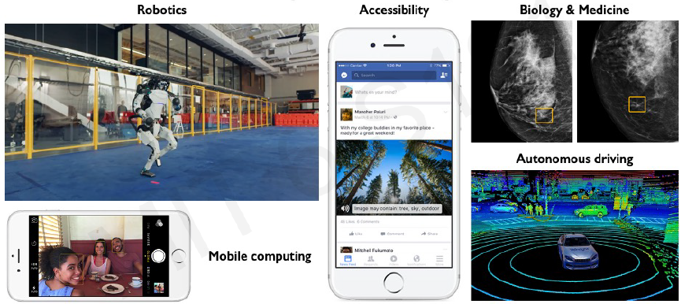
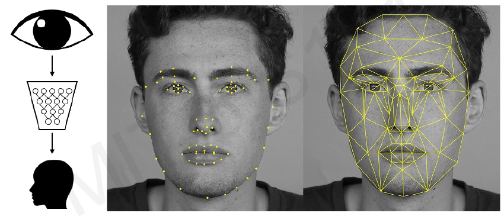
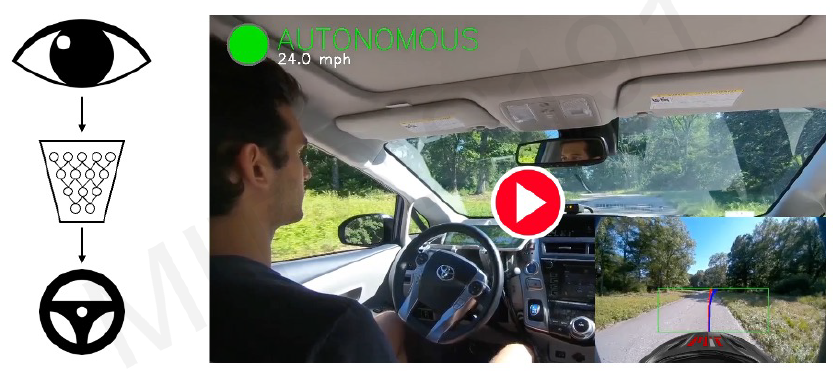
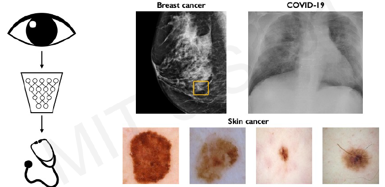
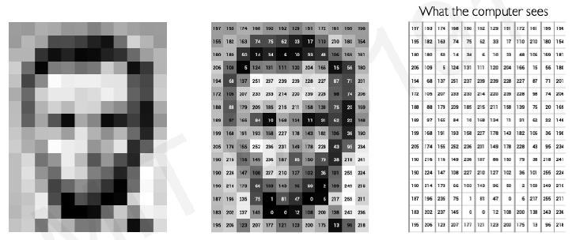
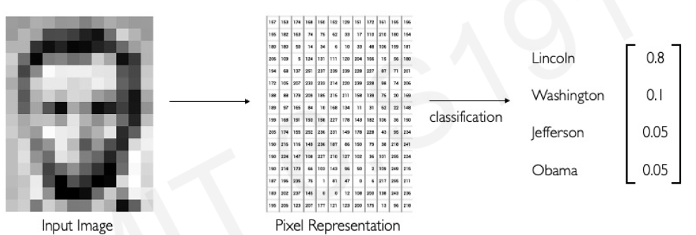
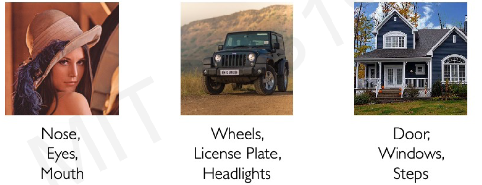
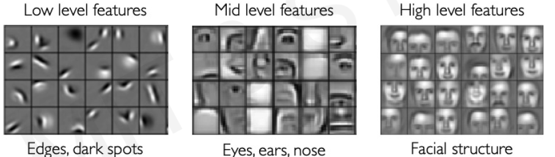

Notes on Computer Vision
What do we mean by computers vision?
We want to build computer systems able to see what is present in the world, but also to predict and anticipate events.
Deep learning is enabling many systems to undertake a variety of computer vision related tasks.

In particular it enables automatic feature extraction, something that before DNN used to require relevant human participation.



What computers see?
To a computer images, of course, are numbers.
An (RGB) image is just a NxNx3 matrix of numbers [0,255]

Main tasks in Computer Vision:
- Regression: Output variable takes continuous value. E.g. Distance to target
- Classification: Output variable takes class labels. E.g. Probability of belonging to a class

Before attempting to build a computer vision system we need to be aware of what feature keys are in our data that need to be identified and detected.
Each image may have a different set of features.

Manual feature extraction is hard! Especially if it has to be done “by hand”
Notice also that feature characterization needs to define a hierarchy of features that allowas an increasing level of detail
HEAD -> Eyes/Mouth/Nose/… ->

Can we learn a hierarchy of features directly from the data
